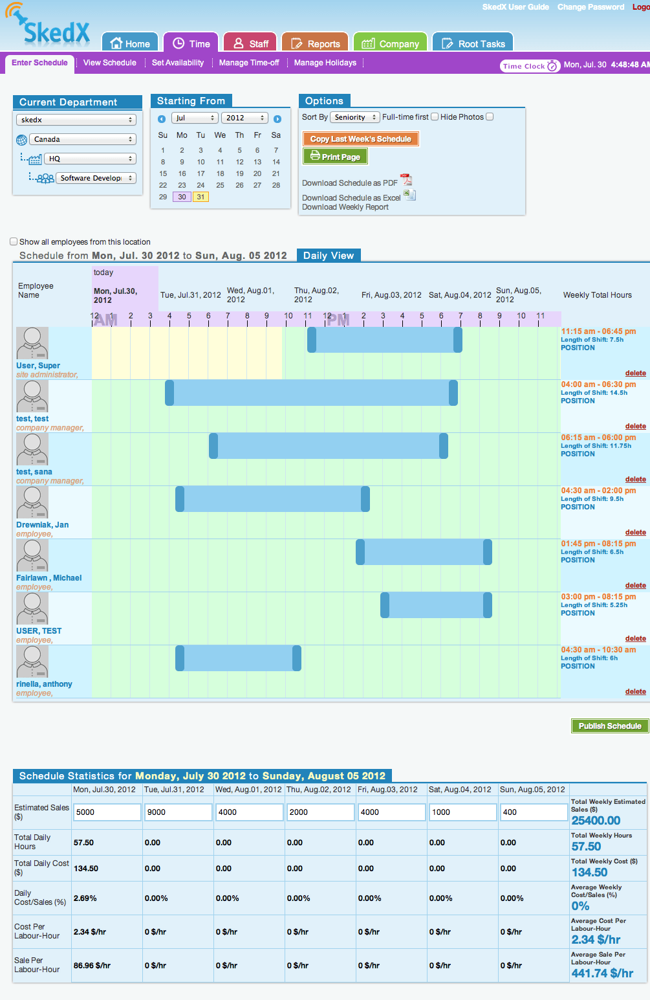
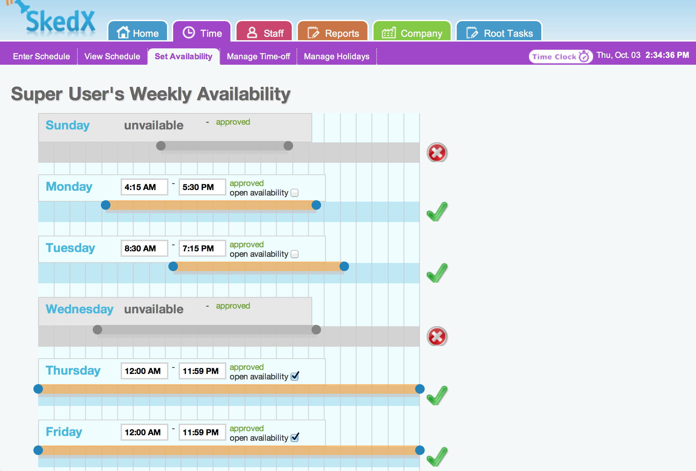
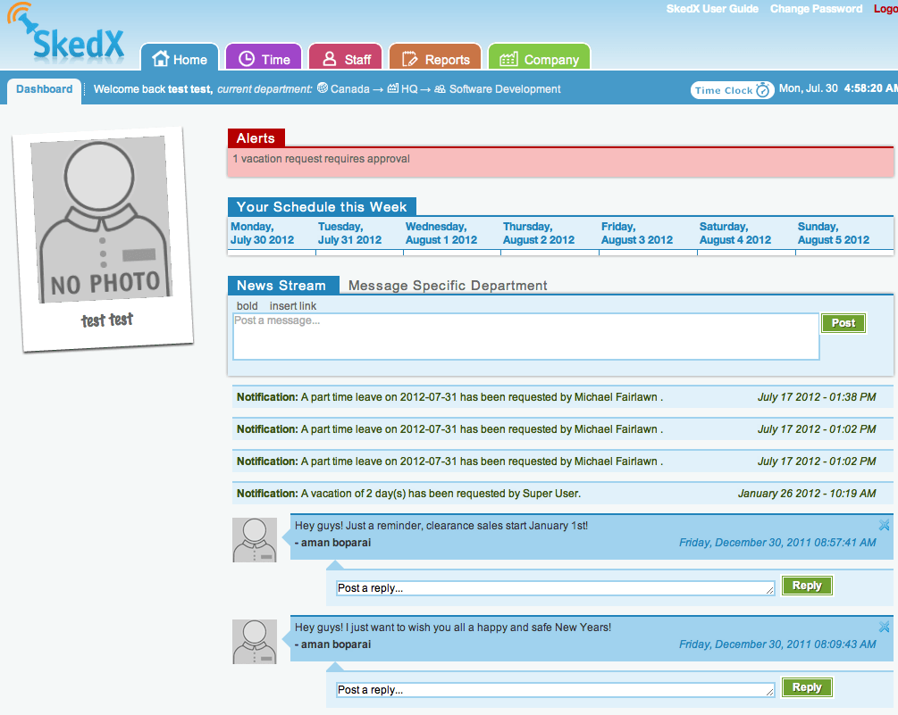
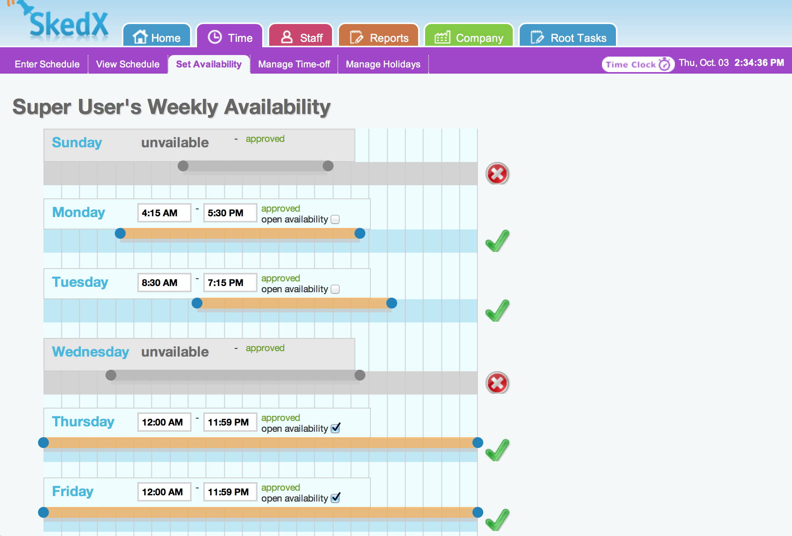
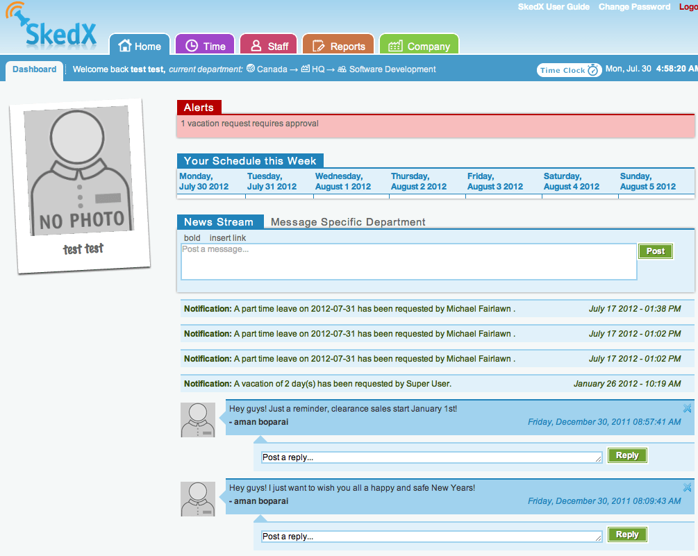

Employee scheduling made easy. skedx.com
Skedx is an web-based staff scheduling tool for retail/hospitality. It lets managers manage all aspects of staff scheduling, including: vacation management, scheduling, time-clocking, alerts etc.
My Role: As head of design & front-end development, I designed all aspects of the interface, then turned it into reality.


 


